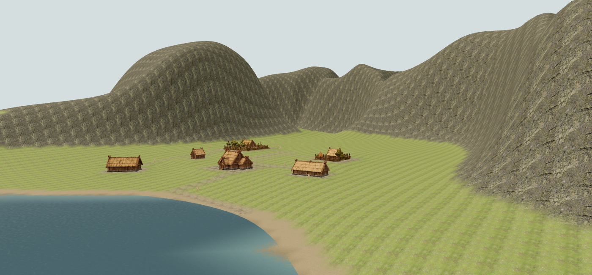
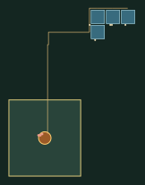
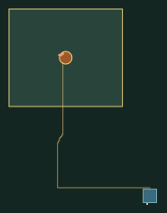
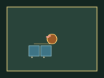
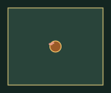
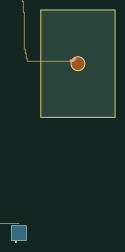

Actual campaign capacity — #134
Six Lab parcels do not prove seven to ten real campaign household plots. This is a read-only experiment. Default campaign adoption remains gated.
Full method, results and stage timings · Raw evidence · Unchanged island/start-camera comparisons
Gold outline: reserved zone. Blue: actual 15×15m plots. Orange: 7m camp clearing. Gold paths: household circulation. White: residents. Pink: cattle. Plots outside the outline are failures.
Representative player start · seed 18

Both regions · fixed and held-out seeds
Seed 17 · Player · rejected candidate · 0/8 contained plots.
The real allocator cannot place every household. Resident positions are missing or outside the reserve. Not all household approaches connect to the camp clearing.Seed 17 · Rival · rejected candidate · 0/8 contained plots.
The real allocator cannot place every household. Resident positions are missing or outside the reserve. Not all household approaches connect to the camp clearing.Seed 42 · Player · selected reserve · 0/8 contained plots.
The real allocator cannot place every household. Resident positions are missing or outside the reserve. Not all household approaches connect to the camp clearing.Seed 42 · Rival · selected reserve · 0/8 contained plots.
The real allocator cannot place every household. Resident positions are missing or outside the reserve. Not all household approaches connect to the camp clearing.Seed 91 · Player · rejected candidate · 0/7 contained plots.
The real allocator cannot place every household. Resident positions are missing or outside the reserve. Not all household approaches connect to the camp clearing.Seed 91 · Rival · rejected candidate · 0/7 contained plots.
The real allocator cannot place every household. Resident positions are missing or outside the reserve. Not all household approaches connect to the camp clearing.Seed 1983 · Player · selected reserve · 0/8 contained plots.
The real allocator cannot place every household. Resident positions are missing or outside the reserve. Not all household approaches connect to the camp clearing.Seed 1983 · Rival · selected reserve · 0/8 contained plots.
The real allocator cannot place every household. Resident positions are missing or outside the reserve. Not all household approaches connect to the camp clearing.Seed 1337 · Player · rejected candidate · 1/8 contained plots.
The real allocator cannot place every household. Resident positions are missing or outside the reserve. Not all household approaches connect to the camp clearing.Seed 1337 · Rival · rejected candidate · 0/8 contained plots.
The real allocator cannot place every household. Resident positions are missing or outside the reserve. Not all household approaches connect to the camp clearing.Seed 18 · Player · selected reserve · 0/9 contained plots.
The real allocator cannot place every household. Resident positions are missing or outside the reserve. Not all household approaches connect to the camp clearing.Seed 18 · Rival · selected reserve · 0/9 contained plots.
The real allocator cannot place every household. Resident positions are missing or outside the reserve. Not all household approaches connect to the camp clearing.
Seed 104 · Player · rejected candidate · 0/9 contained plots.
The real allocator cannot place every household. Allocated household plots leave the reserved region. Resident positions are missing or outside the reserve. Not all household approaches connect to the camp clearing.Seed 104 · Rival · rejected candidate · 0/9 contained plots.
The real allocator cannot place every household. Resident positions are missing or outside the reserve. Not all household approaches connect to the camp clearing.Seed 211 · Player · selected reserve · 1/7 contained plots.
The real allocator cannot place every household. Resident positions are missing or outside the reserve. Not all household approaches connect to the camp clearing.Seed 211 · Rival · selected reserve · 0/7 contained plots.
The real allocator cannot place every household. Resident positions are missing or outside the reserve. Not all household approaches connect to the camp clearing.Seed 512 · Player · rejected candidate · 0/9 contained plots.
The real allocator cannot place every household. Resident positions are missing or outside the reserve. Not all household approaches connect to the camp clearing.
Seed 512 · Rival · rejected candidate · 0/9 contained plots.
The real allocator cannot place every household. Allocated household plots leave the reserved region. Resident positions are missing or outside the reserve. Not all household approaches connect to the camp clearing.Seed 819 · Player · selected reserve · 0/8 contained plots.
The real allocator cannot place every household. Resident positions are missing or outside the reserve. Not all household approaches connect to the camp clearing.Seed 819 · Rival · selected reserve · 0/8 contained plots.
The real allocator cannot place every household. Resident positions are missing or outside the reserve. Not all household approaches connect to the camp clearing.Seed 7 · Player · selected reserve · 0/8 contained plots.
The real allocator cannot place every household. Resident positions are missing or outside the reserve. Not all household approaches connect to the camp clearing.Seed 7 · Rival · selected reserve · 0/8 contained plots.
The real allocator cannot place every household. Resident positions are missing or outside the reserve. Not all household approaches connect to the camp clearing.Seed 73 · Player · rejected candidate · 0/8 contained plots.
The real allocator cannot place every household. Resident positions are missing or outside the reserve. Not all household approaches connect to the camp clearing.
Seed 73 · Rival · rejected candidate · 2/8 contained plots.
The real allocator cannot place every household. Resident positions are missing or outside the reserve. Not all household approaches connect to the camp clearing.Seed 256 · Player · selected reserve · 0/7 contained plots.
The real allocator cannot place every household. Resident positions are missing or outside the reserve. Not all household approaches connect to the camp clearing.Seed 256 · Rival · selected reserve · 0/7 contained plots.
The real allocator cannot place every household. Resident positions are missing or outside the reserve. Not all household approaches connect to the camp clearing.Seed 4096 · Player · rejected candidate · 0/7 contained plots.
The real allocator cannot place every household. Resident positions are missing or outside the reserve. Not all household approaches connect to the camp clearing.Seed 4096 · Rival · rejected candidate · 0/7 contained plots.
The real allocator cannot place every household. Resident positions are missing or outside the reserve. Not all household approaches connect to the camp clearing.
Seed 65537 · Player · selected reserve · 0/8 contained plots.
The real allocator cannot place every household. Resident positions are missing or outside the reserve. Not all household approaches connect to the camp clearing.
Seed 65537 · Rival · selected reserve · 0/8 contained plots.
The real allocator cannot place every household. Allocated household plots leave the reserved region. Resident positions are missing or outside the reserve. Not all household approaches connect to the camp clearing.